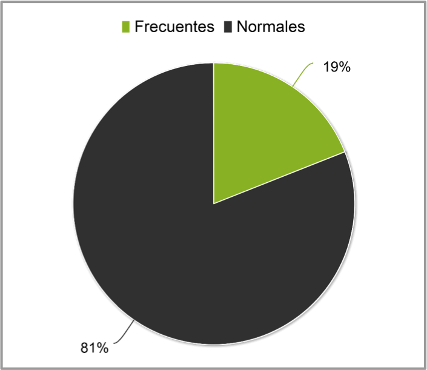
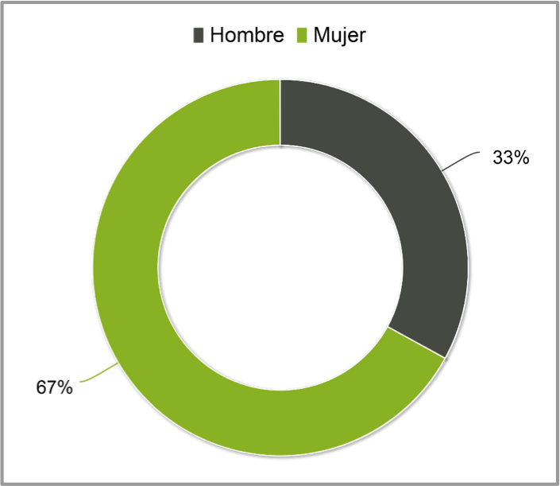
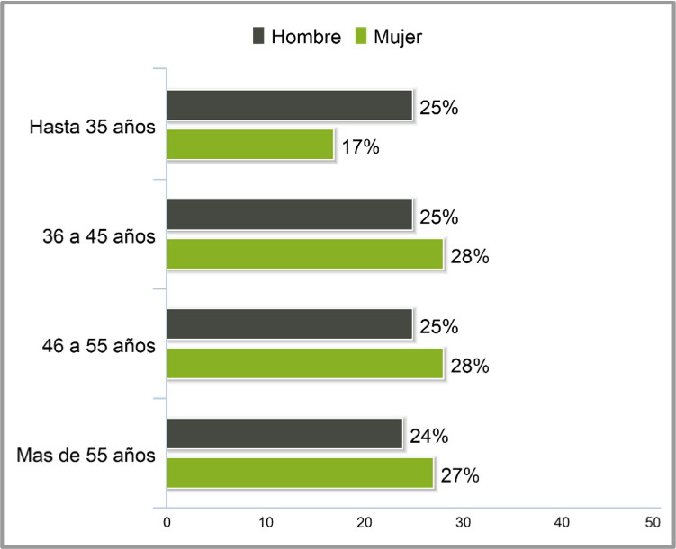
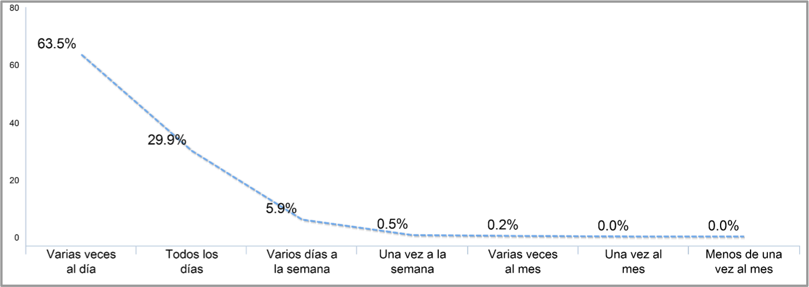
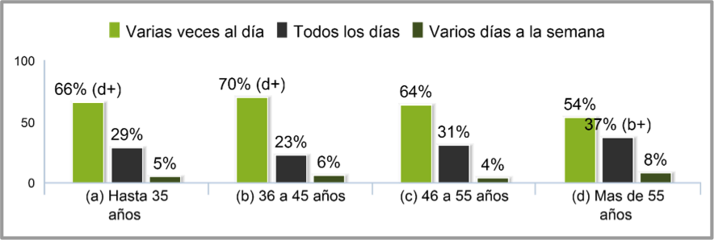

Se han realizado 592 entrevistas distribuidas entre clientes frecuentes (116) y clientes normales (480) facilitados por Falabella.El campo se ha realizado entre el 23 de septiembre y el 5 de octubre.La duración del cuestionario ha sido de 13 minutos de media.
Distribución por Sexo y Edad
Sexo

Edad

Frecuencias Acceso a Internet


LOS MENORES DE 45 AÑOS SE CONECTAN MÁS FRECUENTEMENTE A INTERNET, MIENTRAS QUE LOS DE MAS DE 55 AÑOS LO HACEN CON MENOR FRECUENCIA.